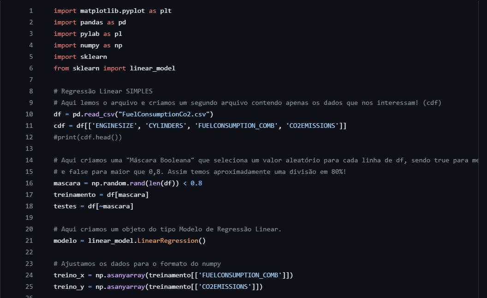

Algoritmo de Regressão Linear

Algoritmo de Regressão Linear Simples desenvolvido em Python, com as bibliotecas NumPy, SkLearn, Pandas e PyLab. O algoritmo lê
um arquivo .CSV que contém informações sobre as configurações de motores de carros e suas respectivas emissões, e prevê as emissões para um grupo de teste.
O algoritmo atinge um valor R-Quadrado de 0,75.
Tecnologias Utilizadas
Python
SkLearn
NumPy
Pandas